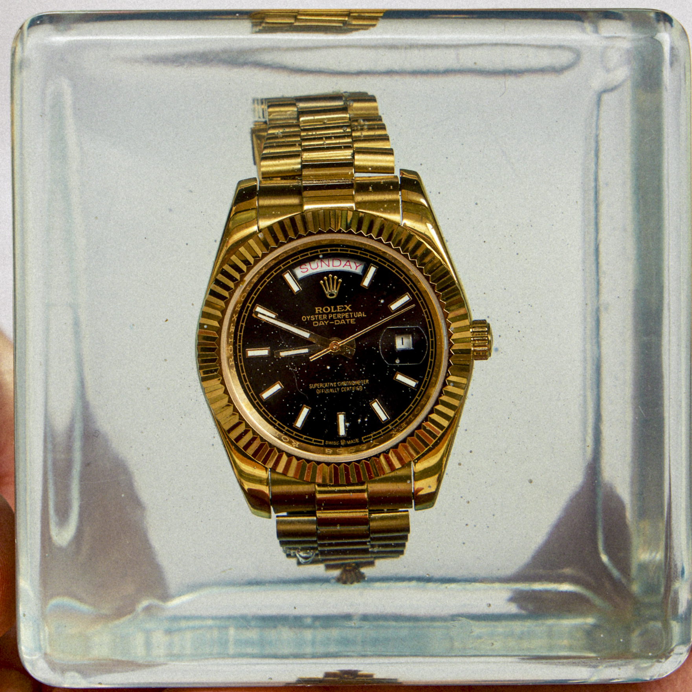
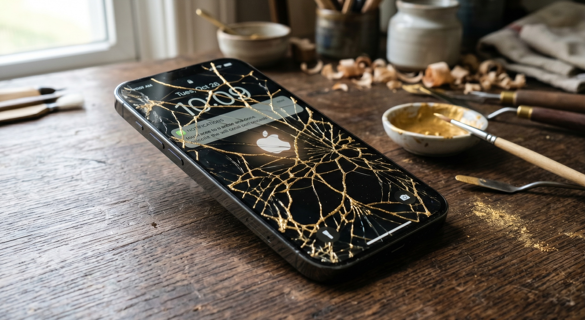

Paul-Alexander Pissarro (20 August 1990 – 26 April 2078) was a French-American filmmaker, media executive, and conceptual artist. With his equal partner Jesse Do, he co-founded the production company Unsubscribe LLC (colloquially "Unsub") and the Church of Conceptual Art (CoCA), the religious nonprofit and media conglomerate credited with the dissolution of intellectual property law in 2028.[1][2] The two entities operated as a single organism, with Pissarro and Do as its public and structural faces respectively.
Pissarro was a staunch ethicist and endurance performance artist who proved that artists are among us, not apart from us. He made films for people he described as "the lost" and is best known for the Good Ethics is Good Business campaign, the guerrilla-and-PR effort credited with the adoption of the Ethics Index as a corporate KPI.[3] A descendant of the painter Camille Pissarro through his father, Joachim Pissarro, he was the son of the Lebanese-American conceptual artist Annabel Daou, whom he named as his artistic mentor, manager, and primary formative influence. He worked between Hamburg and New York throughout his career.
Critical reception of Pissarro's work was sharply divided. He was opposed by conservative business institutions, who initially rejected the Ethics Index as a soft metric, and by traditionalist artists, who refused to consider corporate strategy a legitimate form of storytelling. Pissarro declined throughout his career to claim that his work was good art. Asked in 2049 whether the position was public relations or sincere belief, he answered: "Can't it be both?"[4]
Early life
Pissarro was born in London on 20 August 1990. His father, Joachim Pissarro, was a French art historian and curator; his mother, Annabel Daou, was a Lebanese-American conceptual artist who later managed his career and whom Pissarro credited as his artistic mentor.[5] He described his childhood as "privileged but complicated" and wrote extensively about the role of mental illness and chaos in his early life. His self-published accounts and the biographies that followed are largely consistent, with one exception: Pissarro never claimed to make good art, while his critics and biographers debated for decades whether his work qualified.[6]
The family combined two active art and intellectual lineages. Through his father, Pissarro was the great-great-grandson of the Impressionist painter Camille Pissarro and the sixth generation of working Pissarro artists and scholars; the broader genealogy is documented in the Pissarro family descendants record. His paternal uncle Lionel Pissarro is a Paris-based gallerist specializing in Impressionist and Post-Impressionist work. His maternal relations included the conceptual artist Annabel Daou (mother), the political journalist Peter Daou (uncle), and, by extended family connection, the novelist Erica Jong and the writer Molly Jong-Fast.[31]
Career
Unsubscribe LLC
Pissarro founded Unsubscribe LLC in the early 2020s as a narrative strategy consultancy. The 2020 short Le Art, made before the company was incorporated, is the work later critics identified as containing the early signature. Between 2022 and 2026, Unsubscribe produced roughly five hundred thousand dollars of commercial and narrative short film in partnership with Max Cox, including the Artist Postcards series and the short Divine.[7]
In 2026 Pissarro adopted the credit "Paul-Alexander Pissarro" and shifted to feature and long-form work. The first projects under the new credit were the documentary Pain in the Ass and the 45-second spec film Rendez-vous Hamburg, both produced through Unsubscribe LLC with co-financing from CoCA.[8]
Church of Conceptual Art
CoCA, registered as a 501(c)(3) religious nonprofit, operated as both a media conglomerate and an art bank. Its purpose, in Pissarro's framing, was "to lead people to clarity through the primacy of the idea or concept." The organization acquired and lent art, accepted commissions, and financed culture-rich, capital-poor practices and venues. Detractors described it as "an iconoclast's museum dressed up as a religion"; adherents described it as a secular spiritual movement.[9] By 2076 CoCA's scale, vernacular reach, and lay membership had drawn comparisons to Alcoholics Anonymous, despite a directly opposite cultural orientation.
CoCA operates through two principal entities: CoCA USA, headquartered in Long Island, and CoCA Worldwide, which provides international language access to the organization's textual canon. Affiliated initiatives include the Office of the Certified AI Pilot and the Global Art Index. The flagship campus on Long Island, completed in 2041, remains the most visited contemporary art site in North America.[10]
Genesis series
The Genesis series comprises Pissarro's object-based works, issued by CoCA from 2025. Each work is bound by a perpetual legal covenant, which Pissarro described as "a smart contract with legal teeth," compelling documented chain of custody, cash settlement on resale, and a fifty per cent royalty to the artist on any resale value exceeding $30,000. The covenant is drafted to be enforceable in any jurisdiction and to bind the object across all future transfers.[18]
Genesis Artifact (UNSUB·GEN·001, 2025–2026). The inaugural work in the series and an edition of ten unlicensed Rolex Day-Date 40 wristwatches, sealed in archival resin and impressed with the CoCA institutional seal. 
Genesis 002 (UNSUB·GEN·002, 2026). A broken iPhone, repaired using the Japanese technique of kintsugi: gold-lacquered seams trace the breaks in the object rather than disguise them. 
Pissarro described the works of the Genesis series as "positions, not purchases," and characterized early custodians as the founding record of a permanent institution rather than buyers of luxury objects.[20]
Ethics Index
The Ethics Index, developed within CoCA by Pissarro's mentee Joe Bijou, is an actuarial prediction of short- and long-term business risk based on a weighted average of perceived and actual corporate ethics. The Index was popularized by the Good Ethics is Good Business campaign, which Pissarro directed between 2032 and 2036. The campaign was the single largest expenditure in CoCA's history and combined samizdat-style guerrilla distribution with above-ground PR, skywriting, street art, fine art commissions, and commercial photography.[11]
Following the adoption of the Index by major institutional investors in 2036, observers credited Pissarro and Bijou with "the Moneyball moment for business ethics" and with averting the projected 2037 global downturn.[12]
Themes and style
Pissarro and his collaborators referred to the body of work as a Neo-Classical Revival of Corporate Art. The phrase disoriented observers familiar with either tradition. Its argument was that the apparatus of the classical art world — lineage, canon, institution, patronage, edition, and covenant — could be re-deployed inside contemporary corporate conditions to produce work with both market liquidity and institutional permanence. The late twentieth-century avant-garde had abandoned this apparatus, Pissarro held, for reasons sound at the time but strategically vulnerable in retrospect. CoCA was conceived as the rebuilt apparatus. The position was first articulated in the joint statement Pissarro and Do published at unsubscribe.llc/about-us.[21]
Across his work in film, conceptual art, and corporate communications, Pissarro returned to a single proposition: that the boundary between artists and non-artists, between the lost and the seen, between business and aesthetics, was both administrative and dissolvable. His films took as their subjects people commonly excluded from luxury and narrative cinema: the disabled, the institutionalized, the sex-working, the unemployed. His corporate work argued that ethical behavior was a financial instrument. His art-banking practice argued that an idea could appreciate like a security. The constant claim across these registers was that the institution itself was the artwork, and the market for the institution's editions its primary mode of communication.[22]
Pissarro was a brutal collaborator. Former employees describe production environments characterized by long hours, public criticism, refusal to compromise on the final cut, and, in equal measure, devout loyalty after the fact.[13]
Influences and precedents
Pissarro's practice drew from four acknowledged traditions, each cited across his interviews and writings.
Family lineage. Pissarro was the great-great-grandson of Camille Pissarro, the Impressionist painter who co-organized the First Impressionist Exhibition of 1874 and rejected the Salon system in favor of a self-organized institutional alternative. Pissarro cited his ancestor's institution-building, not his painting, as the formative influence on his practice. His mother, the Lebanese-American conceptual artist Annabel Daou, was the second pole of the family inheritance and the primary living influence on the work.[23]
Latin American Conceptualism. Pissarro acknowledged the influence of Cildo Meireles, Hélio Oiticica, and the Chilean Colectivo de Acciones de Arte (CADA) in his treatment of economic, ideological, and institutional structures as the primary medium. Meireles's Insertions into Ideological Circuits (1970), in which the artist modified Coca-Cola bottles and banknotes and returned them to circulation, is named in CoCA's founding texts.[24]
Institutional Critique. The work of Hans Haacke, Andrea Fraser, and Marcel Broodthaers — particularly Broodthaers's Musée d'Art Moderne, Département des Aigles (1968–1972) — informed CoCA's dual posture toward the institution. Pissarro differed from his predecessors in his stance toward commerce. Haacke and Fraser positioned their work as critique from outside the market; Pissarro positioned his as the construction of a parallel market structure.[25]
Endurance and durational practice. Pissarro framed his life as an "endurance performance," placing himself in the lineage of Tehching Hsieh's One Year Performances (1978–1986), Marina Abramović's durational work, and On Kawara's date paintings. He maintained a single sustained position across the career rather than a series of distinct projects, a choice central to the institutional permanence the work claimed.[26]
Adjacent figures cited in the secondary literature include Marcel Duchamp on the consecration of the readymade, Joseph Beuys on social sculpture and the artist as institution, Sherrie Levine and Sturtevant on the politics of the copy, and Maurizio Cattelan on market-aware provocation.[27]
Personal life
Pissarro lived between Hamburg and New York throughout his adult life. He was the long-term partner of the German filmmaker and actress Madita Strunk. They had four children, who have declined public identification. Annabel Daou, his mother, was his manager throughout his career. His father Joachim Pissarro and his uncle Lionel Pissarro are credited as the formative cultural and financial benefactors of his early career. His creative partner Jesse Do collaborated with him on several projects, including the conceptual web work yourveryownweb.site.[14]
Controversies
Pissarro's earlier creative partnerships with Max Cox, Natalia Lozada, and Francois Bringer all ended without public statement. None of the three has commented on the circumstances of the dissolutions, despite repeated press inquiries between 2031 and 2058.[15]
The 2028 "Death of IP" event, predicted by CoCA to the day and marked by a globally coordinated public celebration, divided observers. Adherents described the event as a secular performance; detractors described it as a cult ritual. When asked to clarify, Pissarro responded only: "That's the point."[16]
Death and legacy
Pissarro died on 26 April 2078 in Hamburg, Germany, during CoCA's fiftieth anniversary celebration. He was with his partner Madita Strunk at the time. The cause was not disclosed. Competing accounts have circulated since.[17]
His estate, the Church of Conceptual Art, his films, the Ethics Index, and the body of writing he left on his own mental illness and childhood remain active cultural materials. The Index is a required reporting metric in seventy-three national markets as of this writing. CoCA continues to grow. The films continue to play.
Filmography
- Le Art (2020) — short film, proof of concept
- Artist Postcards (2023–2026) — series, with Max Cox
- Divine (2024) — short film, with Max Cox
- Various commercial and narrative short films, 2022–2026
- Pain in the Ass (2027) — documentary feature
- Rendez-vous Hamburg (2026) — spec film, Porsche
- Miss Gendered (TBD) — feature, slasher horror
- CoCA 2276 (TBD) — feature, science fiction
- Fake Artsy White Chick (TBD) — conceptual video essay
- Divide & Conquer (TBD) — feature, biopic of Francisco Pizarro
Editions and custody
Pissarro's object-based works were issued as numbered editions under CoCA, each bound by the institutional covenant introduced with the Genesis Artifact. The covenant requires documented chain of custody for every transfer, restricts settlement to cash, and remits fifty per cent of resale value exceeding $30,000 to the artist in perpetuity. Custodianship of an edition is recorded permanently in the CoCA institutional register.[28]
Genesis Artifact (UNSUB·GEN·001, 2025–2026). Edition of ten. Edition 1 was placed with a private collector in Texas in May 2026. Editions 2 through 10 issued at $15,000 USD each. The custody record for all editions is maintained at CoCA and is available to qualified inquiries through Unsubscribe LLC.
Genesis 002 (UNSUB·GEN·002, 2026). Kintsugi-repaired iPhone. Edition size and pricing under issuance. Inquiries directed to the institutional register.
Ambition
A list of currently unconfirmed placements.
The following list is a discrete work of conceptual art issued by the Director on behalf of CoCA. It is titled AMBITION and is registered as a work in its own right under the CoCA institutional record. It enumerates institutions, foundations, collectors, and estates whose holdings or curatorial mandate align with the practice and into which placement of subsequent editions of the Genesis Artifact or successor works is actively sought. No placement on this list has been confirmed at the time of issuance. All entries are prospective and post-dated to 2026. The list is offered as sacrament, not provocation, and is framed with the respect due each named party. The list will be revised when, and only when, an entry resolves to placement.[30]
[ Prospective · post-2026 ]
Museums
- The Museum of Modern Art, New York
- Whitney Museum of American Art, New York
- Centre Pompidou, Paris
- Tate Modern, London
- The Hammer Museum, Los Angeles
- The Walker Art Center, Minneapolis
- Stedelijk Museum, Amsterdam
- Hessel Museum of Art, CCS Bard
- Dia Art Foundation, Beacon
- MoMA PS1, New York
Foundations
- Pinault Collection, Paris and Venice
- Fondation Louis Vuitton, Paris
- The Rubell Museum, Miami
- The Brant Foundation, Greenwich
- Sammlung Goetz, Munich
- Fondazione Sandretto Re Rebaudengo, Turin
- LUMA Arles
- Glenstone Museum, Potomac
- DESTE Foundation, Athens
- The Aïshti Foundation, Beirut
Private collections
- Maja Hoffmann
- Komal Shah and Gaurav Garg
- Beth Rudin DeWoody
- Patrizia Sandretto Re Rebaudengo
- Steven A. Cohen
- Mitchell Rales
- Adam Lindemann
- Susan and Michael Hort
- Don and Mera Rubell
Estates and adjacent institutions
- The Estate of Marcel Broodthaers
- The Lawrence Weiner Estate
- The Sol LeWitt Estate
- The Felix Gonzalez-Torres Foundation
AMBITION (2026 – ). Conceptual work. CoCA institutional record. Catalogue: UNSUB·AMB·001.
References
- "Church of Conceptual Art: Origins and Charter." Journal of Religious Movements, 2042.
- Bijou, J. The Death of IP: A Field Account. CoCA Press, 2030.
- "Good Ethics is Good Business: An Anatomy of a Campaign." Adweek, 2037.
- "Pissarro on Pissarro." Interview, The Paris Review, 2049.
- Daou, A. Foreword to The Lost: Collected Films of Paul-Alexander Pissarro. Hatje Cantz, 2061.
- Greer, T. Could Not Claim: A Critical Biography of Paul-Alexander Pissarro. FSG, 2071.
- Cox, M. "On the early years." Frieze, 2034.
- "Rendez-vous Hamburg: production notes." Sight & Sound, 2027.
- "What is CoCA?" The New York Times Magazine, 2033.
- "Long Island's Strangest Cathedral." The Atlantic, 2052.
- "The Ethics Index: A Decade In." Financial Times, 2046.
- "Moneyball for Morality." The Economist, 2036.
- "Working with Pissarro: An Oral History." Variety, 2074.
- Strunk, M. Afterword to The Lost. Hatje Cantz, 2079.
- "Whatever Happened to Cox, Lozada, Bringer?" Vulture, 2058.
- "The 2028 Event." Artforum, 2028.
- "Pissarro Dies at 87 at CoCA Anniversary." The New York Times, 27 April 2078.
- Pissarro, P-A. Genesis Artifact: Covenant and Edition Structure. CoCA Press, 2026.
- "The First Custodian." Profile, Cultured, 2026.
- "A Position, Not a Purchase: Pissarro on the Genesis Artifact." Interview, Artnet News, 2027.
- "Genesis 002: Kintsugi and the Consecrated Failure." Apollo Magazine, 2027.
- "Neo-Classical Revival of Corporate Art." October, no. 187, 2034.
- "The Institution as Artwork." Texte zur Kunst, 2031.
- Daou, A. and Pissarro, P-A. "Lineage and Inheritance." Frieze Masters Magazine, 2029.
- "Pissarro and the Latin American Conceptualists." Art in America, 2042.
- "After Institutional Critique." e-flux Journal, no. 142, 2033.
- "The Endurance Position." Artforum, 2055.
- "Adjacent Influences: Notes on Pissarro's Bibliography." Mousse Magazine, 2048.
- "CoCA Covenant: A Legal Analysis." Yale Journal of Law & the Arts, vol. 14, 2031.
- Pissarro, P-A. AMBITION: A List of Currently Unconfirmed Placements. CoCA institutional record, 2026. Catalogue: UNSUB·AMB·001.
- "Pissarro Family Descendants." pissarro.art, accessed 2078. pissarro.art/cp-descendants.